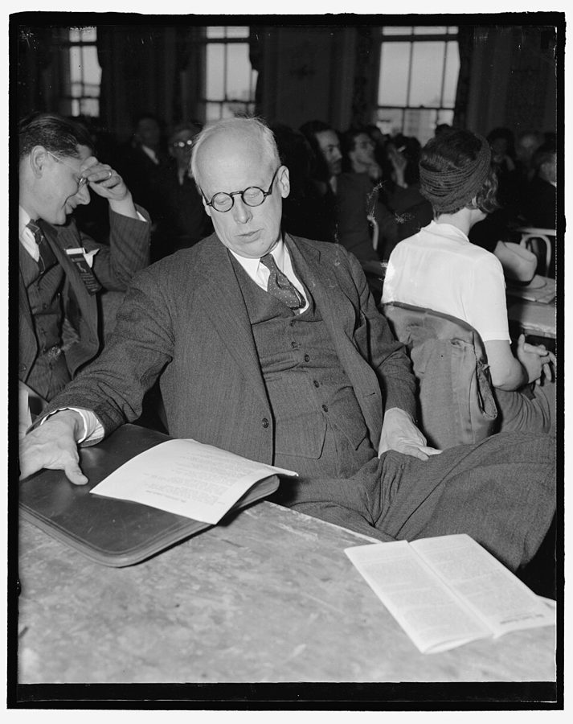
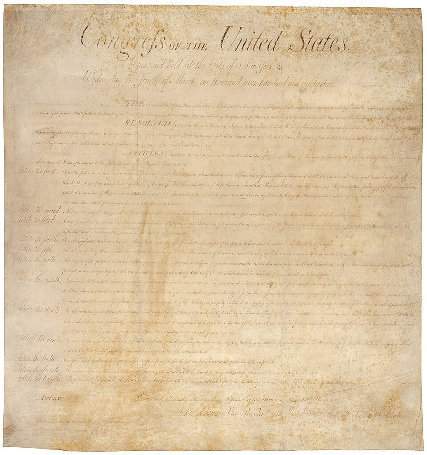
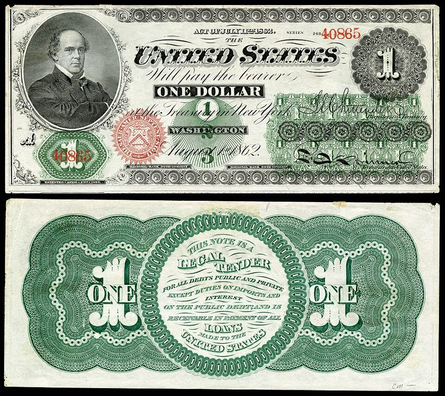

这一章在做什么
全书最后一章，从病讲到药。作者先说潮流在转：1979 年前后英国、瑞典、加州都在反大政府，而观念先变、政策随后。接着解释政府为什么只增不减：好处集中在少数人手里，代价摊给所有人，中间还有自成一派的官僚，所以逐项去砍注定失败。药方是修宪：像第一修正案那样一揽子定规矩，先限税收和开支，再管关税、价格、执照、税制和货币。读的时候抓两条线：特殊利益凭什么总赢；规则为什么比逐项改革管用。
1979 年 12 月 17 日，上任七个月的英国首相撒切尔访问白宫，身边是卡特总统夫妇。§1 开头第一个例子就是她当年 5 月的胜选。White House Photographic Office，公有领域，维基共享资源
1979 年 12 月 17 日，上任七个月的英国首相撒切尔访问白宫，身边是卡特总统夫妇。§1 开头第一个例子就是她当年 5 月的胜选。White House Photographic Office，公有领域，维基共享资源
读之前：先下注
前九章一章查一个领域：贸易、萧条、福利、平等、学校、消费者、工人、通胀，结论几乎都是「政策的结果和本意相反」。这一章回答两个收尾的问题：既然如此，这些政策为什么还能一项项通过、只增不减？有什么办法让它停下来？用的工具是第 1 章的两样：政府的边界，以及「看不见的手」，只是这一回作者把那只手翻过来，用到了政治上。§4 拿来举例的航运、钢铁、农业、邮政，前面几章零星出现过；§7 的七条修正案，每一条都对着前面某一章。
想让一个不断膨胀的政府停下来，下面哪个办法最可能管用？
选出主张小政府的议员和总统
逐个审查政府项目，把没用的砍掉
先把通胀压下去，民众的不满和政府的胃口都会小下来
修宪，给政府的总开支和权限定下一揽子的规矩
把更多的事交给州和地方政府去管
在 20 世纪前几十年，对美国经济政策走向影响最大的是哪个政党？
民主党：新政就是它推出来的
共和党：1920 年代它一直握着白宫
社会党
老罗斯福 1912 年拉起来的进步党
哪个党都不是，推着政策走的是大萧条本身
如果每一项政府开支背后都有一小群人拼命争取，却没有谁值得花力气去反对，民主制度要怎样才能管住政府的总规模？
明治日本的领导人不看重个人自由，独立后印度的领导人很看重，可两国的经济政策正好反过来。作者用这个对照证明什么？你觉得证明得了吗？§2
作者说政治里也有一只「看不见的手」，方向和斯密那只相反。它是怎样把一心为公的人引去替特殊利益办事的？§4
作者自己承认，成文宪法对自由社会既不必要也不充分。那他为什么还把希望押在修宪上？他给的两个理由，哪个更站得住？§5
限制联邦政府的修正案限的是支出，各州的修正案多半限的是税收。为什么不一样？§6
这一章的论证骨架
这一章前后两半：前半（§1–§4）是诊断，后半（§5–§8 和两个附录）是药方。§3 大半是别人的原话（一位快递老板、一位英国记者、《华尔街日报》的一篇文章），读时分清哪几段才是作者自己的话。最长的 §4 有三个斜体小标题，中间那个讲「集中的利益和分散的利益」，是全章的理论核心。§7 的修正案作者自己说是试拟的，不必逐字推敲，抓住每一条对着前面哪一章就够了。
观念的潮流 · §1–§2
斯密、杰斐逊
费边、新政
见顶（1979）
证据 · §3：反税、私办快递、英国人逃税、瑞典人以物易物
诊断：特殊利益为什么总赢 · §4
好处集中，代价分散
好处看得见，代价看不见
官僚：中介兼利益集团
政治里的「看不见的手」，方向和斯密那只相反
逐项去砍：九头蛇，注定失败
一揽子规则：经济权利法案
§5 作者否定的路
§5 照第一修正案的样子
试拟的修正案 · §6–§7，附录 B
限税限支
取消关税
价格自由
择业自由
单一税率
货币·通胀
第一类已有成形的草案（附录 B），其余作者自称「试拟」
结论 · §8：我们仍然可以选择方向
本站画的示意图。§1–§3 和 §4 的关系容易读散：前者说「潮流在转」，后者说「为什么转了政策也不变」，§5 的药方是接着后者开的。 边读边填：每行一个问题，读到答案就写一两句。只存在你这台设备的浏览器里，别人看不到。
读完了？对照我找到的
观念：明治领导人不看重自由，却用了自由贸易和私人企业；印度领导人热爱民主自由，却用了集中计划。两种主张都出自英国：斯密和 Laski。
行为：先是愤恨，再想合法的办法绕开，最后对法律普遍失去尊重。作者说可悲但免不了。
账本：约 6 亿美元；4 万名从业者每人约 1.5 万美元；两亿多人每人约 3 美元，四口之家 12 美元。
官僚：是被塞过去的。复杂的事只能授权；两拨官僚的授权打架，又只能再授权给第三拨去协调。
规则：不逐案权衡，一律不许国会立法限制言论；人在少数时怕被管的感受，比在多数时想管别人的劲头强，而人人都有当少数的时候。
税制：左派怕拿降税率换堵漏洞，新漏洞很快冒出来；右派怕拿堵漏洞换降税率，累进很快又变陡。作者说两边都对，只有修宪能让交易算数。
分节地图
原书这一章没有给节编号。§1 是第一个小标题之前的开篇（照抄的是第一段开头几个词），§2–§8 的粗体是书里印的全大写小标题，Kindle 里可以直接搜；§4 和 §7 下面还有斜体小标题，不算一节。章末的两个附录没有标题，这里记作附录A、附录B。每一节下面自动标出纸书页码、在本章录音里大约第几分钟、译本里对应的小节名。建议分三次读；读完一节回来打个勾。
第一次坐下§1–§3 · 约 2900 词 · 潮流在转，人们开始绕开政府
The failure of Western governments…约 700 词 1979 年前后英、瑞、法、美的反大政府浪潮，潮水的比喻。末段「观念先变，政策随后」是全章的前提。 IMPORTANCE OF INTELLECTUAL CLIMATE OF OPINION约 1000 词 日本对印度、费城的制宪者、1928 年的社会党、最高法院，四个「观念决定政策」的例子。 OPINION AND POPULAR BEHAVIOR约 1200 词 大半是别人的原话：罗彻斯特的私人快递、英国人逃税、瑞典人以物易物。作者自己的话只有几段。 第二次坐下§4–§5 · 约 4000 词 · 特殊利益为什么总赢，该怎么办
WHY SPECIAL INTERESTS PREVAIL约 3000 词 全章最长，三个斜体小标题；航运、钢铁、农业、邮政四笔账是核心。译本删了点名苏联、中国、古巴的半句。 WHAT WE CAN DO约 1000 词 九头蛇、第一修正案、经济权利法案；作者承认宪法不是万能。末段讲绕开国会召开制宪会议。 第三次坐下§6–附录B · 约 4400 词 · 具体的修正案；两个附录可以略读
TAX AND SPENDING LIMITATIONS约 900 词 各州的限税修正案和作者参与的委员会；联邦为什么要限支出、不限税收。 OTHER CONSTITUTIONAL PROVISIONS约 1700 词 七条试拟的修正案，一个斜体小标题一条，各自回扣前面一章。末尾说还差三条凑满十条。 CONCLUSION约 200 词 三段，全书的收尾，书名藏在最后一句里。 APPENDIX A约 500 词 1928 年社会党纲领的经济条目，括号里是作者写的下落。译本给条目加了编号，有两处数字有误。 APPENDIX B约 500 词 限制联邦开支的修正案草案全文，共七节。读懂第 1 节的公式就够，下面「经济学」里有算例。
背景：作者默认你知道的事
按在书里出现的顺序排，标题前是节号。书写于 1979 年，书里的「今天」「近来」都是那时候。
§1 1979 年前后的「反弹」撒切尔（Margaret Thatcher）领导保守党在 1979 年 5 月的大选中获胜。瑞典社会民主党从 1932 年起执政（1936 年夏有过三个月的间断），1976 年 9 月大选落败。法国从 1978 年起由经济部长 René Monory 放开工业品价格。加州第 13 号提案（Proposition 13）1978 年 6 月以约 65% 的赞成票通过：房产税封顶在估值的 1%，估值退回到 1975 年的水平，每年最多涨 2%，州里加税要议会三分之二多数。
§1 费边社会主义和新政自由主义费边社（Fabian Society）1884 年在伦敦成立，主张不靠革命、靠一步步立法走向社会主义，名字来自以拖延战术出名的罗马将军费边，后来是英国工党的思想来源之一。新政（New Deal）是罗斯福 1933 年上台后推出的一系列政策。美国政治里的 liberal 指主张政府多管事的中间偏左派，和欧洲说的「自由主义」几乎相反；New Deal liberalism 就是这个意思。
§2 书里点到的人
Harold Laski 哈罗德·拉斯基 英国政治学家，伦敦政治经济学院教授，工党理论家，1945–46 年任工党主席。印度独立运动的 Krishna Menon、后来的印度总统 K. R. Narayanan 都听过他的课。
Norman Thomas 诺曼·托马斯 牧师出身，1928 年起六次代表社会党竞选总统。
Eugene Debs 尤金·德布斯 铁路工会领袖，五次竞选总统，1912 年得票约 6%，是社会党最好的成绩。
Mr. Dooley 杜利先生 专栏作家 Finley Peter Dunne 笔下满口方言的爱尔兰裔酒馆老板。书里那句话说于 1901 年，挖苦最高法院就新得的海外领地（如波多黎各）宪法适用到什么程度所做的判决。
Raoul Berger 拉乌尔·伯杰 宪法学者，1977 年出版《司法治国》（Government by Judiciary），认为最高法院对第十四修正案的解释背离了起草者的原意。
A. V. Dicey 戴雪 §3、§4 两次引用的英国法学家，名著《英格兰的法律与公共舆论》1905 年出版、1914 年再版。

1940 年 4 月，社会党全国代表大会期间的 Norman Thomas。作者说社会党在全国选举里从来没希望，反而可以只讲原则。Harris & Ewing，公有领域，维基共享资源 §2 1787 年的制宪会议和《权利法案》1787 年夏天，各州代表在费城的独立厅（Independence Hall）起草了美国宪法。1789 年，第一届国会提出 12 条修正案，其中 10 条在 1791 年批准生效，就是《权利法案》（Bill of Rights）：第一条保护宗教、言论、新闻自由，第二条保护持枪权，第十条把没授予联邦的权力留给各州和人民。作者在 §5 想要的「经济权利法案」，就是照这个样子起名的。

1789 年 9 月国会提出的 12 条修正案原件，今藏美国国家档案馆。第三到第十二条在 1791 年批准，成了今天的第一到第十修正案。美国国家档案馆，公有领域，维基共享资源 §3 罗彻斯特的私人快递《私人快递法》（Private Express Statutes）是美国从 1792 年起陆续制定的一组法律，禁止私人有偿递送信件，把这门生意留给邮局。Brennan 夫妇在纽约州罗彻斯特开的同城递送被邮政局告上法院，1978 年联邦第二巡回上诉法院维持了禁令，最高法院没有受理他们的上诉。§3 后面几段英国、瑞典的话出自报刊和电视采访，不是作者写的。
§4 华盛顿的机构和法案工资与物价稳定委员会（Council on Wage and Price Stability）1974 年设立，卡特政府 1978 年用它推行「自愿」的工资物价指导线，1981 年撤销。《戴维斯-培根法》（Davis-Bacon Act，1931）要求联邦工程按当地「现行工资」付薪。航运业的特权里最有名的是 1920 年《商船法》的「琼斯法」条款：美国港口之间运货只许用美国造、挂美国旗的船。作者说的「最近被否决」，是 1977 年 10 月众议院否决的石油运输优惠法案，卡特曾表态支持。农民开拖拉机进城，指 1979 年 2 月数百辆拖拉机开进华盛顿请愿。
§4 的几个数字按物价换算到 2025 年，大约乘 4.4：航运补贴一年 6 亿美元约合 26 亿，每个从业者 1.5 万美元约合 6.6 万，每人 3 美元约合 13 美元。
§5 修宪的两条路宪法第五条规定了两条路：国会两院各以三分之二通过提出修正案；或者三分之二的州议会（当时是 34 个）申请，由国会召集制宪会议提出。两条路提出的修正案都要四分之三的州批准。至今 27 条修正案，走的都是第一条路。作者所属的全国税收限制委员会（National Tax Limitation Committee）1975 年成立，Milton Friedman 是它的董事。§5 的「强制校车」，指法院为消除学校的种族隔离，要求用校车把学生送到别区的学校。
§7 美钞案和 1979 年的税南北战争中，国会 1862 年授权发行不兑现金银的纸币，背面印成绿色，俗称 greenbacks。1870 年的 Hepburn v. Griswold 案，首席大法官 Chase 判它违宪；格兰特总统新任命两位大法官后，1871 年法院以 5 比 4 推翻了这个判决。§7 说的所得税，依据是 1913 年批准的第十六修正案；1979 年税率分十几档，从 14% 到 70%。

1862 年发行的一美元法偿纸币，正面左上角的肖像就是时任财政部长的 Salmon P. Chase，背面印着「本票据为一切公私债务的法偿货币」（关税和国债利息除外）。美国国家历史博物馆藏品，公有领域，维基共享资源 §附录A 社会党纲领的下落附录 A 括号里提到的机构：Boulder Dam 1931–1936 年建成，1931 年的法律本已把它定名为胡佛水坝，罗斯福政府改称 Boulder Dam，1947 年国会通过决议恢复了胡佛水坝的名字；Muscle Shoals 是亚拉巴马州的水坝工程，1933 年并入新成立的田纳西河流域管理局（TVA）；Amtrak 1971 年接手全国的城际铁路客运，Conrail 1976 年接手东北部几家破产铁路的货运；WPA、PWA 是新政时期的以工代赈机构；每周 40 小时、超时付加班费，出自 1938 年的《公平劳动标准法》。
胡佛水坝和坝后的米德湖，2013 年摄，与本书年代无关；坝前的拱桥 2010 年才通车。附录 A 第一条纲领点名要把它收归国有，作者说它后来确实成了联邦工程。P. Hughes，CC BY-SA 4.0，维基共享资源
这一章的经济学，先用中文过一遍
这一章用到、作者一句带过的几个概念。读之前过一遍，读的时候就不会卡在概念上。
好处集中，代价分散
一项政策让少数人每人得一大笔、让多数人每人掏一小笔，哪怕总账是亏的，也容易通过。原因是表态要花成本：游说、捐款，哪怕只是花时间弄明白，都得先付出。每人能得 1.5 万美元的人，花几千美元游说也划算；每人只亏 3 美元的人，连读一篇报道都不值。所以国会听证会上往往只有一方在说话。经济学里把这叫作集体行动的问题，Mancur Olson 1965 年系统讲过（作者没有点名）。用编程打个比方：每个依赖包的维护者都会力争保留自己那个包，替整个项目瘦身说话的人谁也不专门负责，项目只会越来越胖。
航运补贴：每年约 6 亿美元 · §4
受益的一方
约 4 万名从业者
每人每年约 15,000 美元
付钱的一方
两亿多美国人
每人每年约 3 美元
值得花钱游说、捐款
不值得花时间弄清楚
两根柱子没有按比例画：按比例，右边那根只有左边的五千分之一
本站画的示意图，数字是书里 §4 给的 1979 年估计。§4 后面的钢铁、农业、邮政三个例子都是同一个结构。 拼起来的多数
作者在 §6 说，统治国家的「多数」其实是许多少数拼起来的。议员把选区里各占 2%、3% 的小群体一个个拉过来：每个群体只关心一件事，你保它那件事，它就投你，别的随你。凑够 51%，就当选了。到了国会里也一样，甲替乙的水坝投赞成票，乙替甲的军事基地投赞成票，这叫 logrolling（互相帮着滚木头，原是拓荒时代邻里互助的说法）。每一笔交换在当事人看来都划算，加起来的总预算却没有一个真正的多数想要。作者由此推出：要管的不是每一项，而是总数。
附录 B 的上限怎么算
附录 B 第 1 节的意思是：联邦今年总支出的增长率，不能超过上一个日历年名义国民生产总值（GNP）的增长率；上一年通胀如果超过 3%，允许的增长率再压低「超出部分的四分之一」。通胀按名义 GNP 增长率减实际 GNP 增长率来算。三点要注意：一是上限跟着经济总量走，开支占收入的比重只能持平或下降；二是增长率按上一年实际的支出算，哪一年少花了，以后的上限都从更低的基数起算，这就是 §6 说的「鼓励逆转」；三是通胀越高，政府能多花的越少，政府就没有了靠通胀多花钱的动力。紧急状态下两院各三分之二可以突破，只限当年。
名义 GNP 增长
12%
通胀 9%
= 12% − 实际增长 3%
扣掉 1.5 个点
=（9% − 3%）× 1/4
今年支出最多增长 10.5%
棘轮：增长率乘的是上一年的实际支出
某一年少花了，以后各年的上限都从更低的基数起算
数字是本站假设的，只用来演示附录 B 的公式
本站画的示意图。§6 说州一级多半限税收、联邦要限支出，因为联邦可以印钱：税收被限住了，还可以靠通胀筹钱。 通胀：不用投票的加税
§1 和 §7 两次说通胀是「无代表的征税」。它走两条路。一是税档：所得税按名义收入分档，假设物价涨 10%、你的工资也涨 10%，实际收入没变，可多出来的那部分落进更高一档，按更高的税率交税，实际交的税多了，却没有哪个议员为此投过票。这叫税档爬升（bracket creep）。二是国债：政府借钱时本息按美元写死，通胀让美元贬值，等于赖掉了一部分债。§7 最后两条修正案就对着这两条路：一条把基础货币的增长限在每年 3%–5%，一条让联邦法律和合同里所有写死的美元数额每年按物价调整，让政府从通胀里捞不到好处。
英文 译本译作 一句话 climate of opinion 观念导向 一个时代里大家不假思索就接受的看法。作者说它先变，政策随后跟上。§1、§2 Fabian socialism / New Deal liberalism 费边主义 / 新政自由主义 英国渐进的社会主义；美国罗斯福以来主张政府多管的路线。§1 special interests / general interest特殊利益集团（小节名作「少数利益集团」）/ 公众利益 某一行业、群体的局部利益 / 全体的利益。§4 invisible hand in politics看不见的手 作者的反用：为公的人被引去替特殊利益办事。§4 concentrated / diffuse interests 利益集中 / 利益分散 好处落在少数人身上 / 代价摊给许多人。§4 bureaucracy 官僚机构 执行政府事务的常任文官体系，作者说它本身也是利益集团。§4 new class 新阶层 大学、媒体、联邦机构里靠政府扩张得益的知识阶层，第 5 章提过。§4、§5 revolving door 旋转门 官员离任去企业、企业的人进政府，来回转。§4 package deal / self-denying ordinance 一揽子交易 / 自我约束的法律 不逐案权衡，事先一次性给自己定下限制。§5 economic Bill of Rights 经济权利法案 作者设想的一组宪法修正案，限制政府在经济上的权力。§5 logrolling （译本未单独译出） 议员之间互投赞成票，交换各自的项目。§6 flat rate 统一的低税率 所有收入超过免税额的部分按同一个税率交税。§7 monetary base 货币量 基础货币：流通的现金加银行在央行的准备金。§7 hidden tax / taxation without representation 隐性税（另一处作「隐蔽的赋税」） 纳税人看不见、没经过表决的税，作者说通胀是最坏的一种。§1、§4、§7
这一章的译本问题比较多，有几处把意思弄反了，读译本时建议对照英文。§1：第 2 段作者说反弹「可能」只是一时的，译本写成了已经发生的事；第 3 段说无代表的征税在 20 世纪和在 18 世纪一样不得人心，译本写成政府一直青睐这种办法。§4：1.5 万美元是每个从业者得到的补贴，译本写成每人交的税；农民从前遇到坏天气是「去教堂求助」，译本写成修建教堂；7000 名律师是在华盛顿跑联邦机构业务的私人律师，不是政府雇的；SEC 那位官员在原文里并没有受贿。§5：New Deal liberalism 一处译成「新自由主义」，今天这个词指的恰恰是相反的主张。§6：没花到上限、以后的上限就降低，译本写成了「超过了限额」；作者和全国税收限制委员会的关系（他们是委员会的人，参与起草）没有译出来。§7：「价格是一种言论」的 speech 是言论，不是演讲；货币修正案里的 obligations 指钞票和准备金，不是贷款。删改：§1 末段删了毛泽东的名字，§4 删了点名苏联、中国、古巴的半句。附录 A：2,500 个职业介绍所印成了 25000，1930 年代印成了 19 世纪。
词与短语
读英文时用；这一章读译本的话可以跳过。词条按在书里出现的顺序排，按节分组；读一节之前先把这一节的过一遍，读的时候就不用停。斜体小字是原句里连续的几个词，在 Kindle 里搜它就能找到那一句。标着「每个字都认识」的，是字面意思会把你带偏的。
§1 The failure of Western governments…
sweep to power
… the reaction swept Margaret Thatcher to power …
（一股浪潮）把人推上台
sweep 是浪潮席卷，和后面的 tide 比喻呼应。
platform
… on a platform pledging her Conservative …
竞选纲领
不是站台、平台。§2 的 plank 是纲领里的一条。
tax revolt
… in the tax revolt that has …
抗税运动
1978 年加州第 13 号提案带起的各州限税风潮。
prove short-lived
… may prove short-lived and be followed …
结果证明是短暂的
prove 在这里是「结果是」，前面有 may，是一种可能，不是断言。
rampant inflation
… sparked by rampant inflation, which governments …
猖獗的通胀
taxation without representation
… been voted, taxation without representation. That …
无代表的征税
北美独立战争前的口号「无代表，不纳税」。作者说通胀就是这种税，所以下一句扯到 18 世纪。
ostensible
… contrast between the ostensible objectives of …
表面上的，声称的
crest
… when it has crested and a …
（浪）涨到顶点
crest 是浪尖。全章反复说潮流 has crested：涨到头了，还没退。
set in
… a contrary tide sets in, that …
（一股潮流）开始并持续下去
render
… rendered the evils that remained (and …
使得（变成某种状态）
render A all the more prominent：让 A 更加显眼。不是渲染。
on the defensive
… Its supporters are on the defensive. …
处于守势
more of the same
… evils except more of the same. They …
再来一点老一套
omnipotent monolithic government
… an omnipotent monolithic government in the …
无所不能、铁板一块的政府
follow suit
… and policy will then follow suit.
跟着做
本是打牌用语：跟出同一花色的牌。
§2 IMPORTANCE OF INTELLECTUAL CLIMATE OF OPINION
unthinking preconceptions
… determines the unthinking preconceptions of most …
不假思索的成见
hamstring
… economic policy that hamstrings their people …
束缚手脚，使无法施展
hamstring 本义是腿后的筋，割断它就走不了路。
sidelight
… is an interesting sidelight that both …
（从侧面看的）一个小插曲
steeped in
… They were steeped in history and …
浸透在……里，精通
steep 当动词是浸泡（泡茶）。
thrust
… This thrust is even clearer in …
主旨，用意
名词，不是「推」这个动作。§4 的 alter their thrust 也是这个意思。
abridge
… or abridging the freedom of speech, …
削减，限制（权利）
第一修正案原文的用词。§5、§7 作者仿写修正案时又用了好几次。
if not an actual majority
… a strong minority, if not an actual majority, …
即便不是多数，也是不小的少数
if not 在这里是「甚至可能是」，往大里说，和第 1 章的 a hint, if not a command 一样。
journals of opinion
… leading intellectual journals of opinion. The …
评论性刊物
《新共和》《民族》都是政论周刊，不登新闻。
party of principle
… to be a party of principle. …
只讲原则的党
和后面的 parties of expediency（讲权宜的党）对着读。
Tweedledum and Tweedledee
… not exactly Tweedledum and Tweedledee—but close …
半斤八两，一模一样的两个
《爱丽丝镜中奇遇》里一对长得一样的胖兄弟。作者说两大党「还不完全是，但也差不多」。
plank
… almost every economic plank in its …
（纲领中的）一条
本义是木板。竞选纲领叫 platform（台子），一条条主张就是铺台子的木板。
election returns
… th’ supreme court follows th’ iliction returns.
选举结果
returns 是各地报上来的计票数。iliction、th’ 是杜利先生的爱尔兰口音拼法。意思是：最高法院看风向判案。
par excellence
… the case study par excellence of …
最典型的
法语，放在名词后面。
under the guise of
… of the Constitution under the guise of …
打着……的幌子
a law unto themselves
… are become a law unto themselves.
自行其是，不受约束
are become 是旧式的完成时写法，等于 have become。
§3 OPINION AND POPULAR BEHAVIOR
on the hustings
… politicians express on the hustings, but …
在竞选演说中
hustings 原指英国选举时候选人发表演说的台子。
prescience
… with remarkable prescience, wrote more than …
先见之明
patent
… to some patent fact which shall …
明摆着的
形容词 patent 是「明显的」，不是专利。同段后面 the patent inefficiency 也是。
take matters into their own hands
… to take matters into their own hands, …
自己动手解决，不再指望别人
something of a celebrity
… became something of a celebrity in …
算是个名人了
something of a … 是「多少算个……」。
wouldn’t dream of
… years ago you wouldn't dream of …
想都不敢想
buck
… You see people bucking the bureaucrats, …
顶撞，对着干
本义是马弓背跳起把人甩下来。
none of their business
… she thinks it's none of their business.
不关他们的事
confiscatory taxes
… in reaction to confiscatory taxes. Says …
没收式的重税
fiddler
… years a nation of fiddlers.
（英俚）揩油、逃税的人
不是拉小提琴的。英式口语 fiddle 是做手脚、钻空子；后面几段的 fiddle 都是这个意思。
Cash and Carry
… goes to the Cash and Carry …
现购自运的批发仓库
付现金、自己把货拉走，所以不留发票的痕迹。
on the company
… have their holidays on the company, …
公司出钱
on 表示由谁买单，比较 It’s on me（我请客）。
Shadow Cabinet
… members of the Shadow Cabinet—they all …
影子内阁
英国在野的最大党组成的「候补内阁」。
archipelago
… in Stockholm's beautiful archipelago vividly illustrate …
群岛
斯德哥尔摩外海有几万个小岛，夏天驾帆船去度假。少干活就少交税。
doing-it-themselves
… The Swedes escape tax by doing-it-themselves …
自己动手干（不请人）
请人修房子要用税后的钱付，对方还要交税；自己干，两道税都省了。
barter
… Barter is another way Swedes …
以物易物
entice … off
… To entice a Swedish dentist off …
把（人）从……引开
把牙医从网球场请回诊所，原文是他自己在打球。
saturation point
… reach a saturation point after which …
饱和点，忍受的极限
§4 WHY SPECIAL INTERESTS PREVAIL
devices
… What devices can we use to …
办法，手段
不是设备。这个问句译本漏了前一句「特殊利益为什么压倒公众利益」。
registered lobbyists
… 15,000 registered lobbyists—often accompanied by …
登记在案的游说者
lobby 是议会大厅外的走廊，当年在那里堵议员说情。
but the tip of the iceberg
… this is but the tip of the iceberg.
只是冰山一角
but 在这里是 only。
get its hands on
… tries to get its hands on whatever …
弄到手
on both sides
… government is not on both sides.
两边都站
前面是 hardly … not：几乎没有哪件事政府不是正反两边都在做。下一段的烟草就是例子。
work overtime
… Stability is working overtime trying to …
加班加点，拼命
hornswoggle
… persuade, pressure, hornswoggle businessmen to …
（美俚）哄骗
三个动词一个比一个狠：劝说、施压、哄骗。
prevailing wages
… determinations of “prevailing wages” under the …
「现行工资」
《戴维斯-培根法》的用语，附录 A 说实际上多按工会的最高工资定。
at cross-purposes
… subgroups working at cross-purposes.
目标互相抵触
ludicrous if it were not so serious
… The situation would be ludicrous if …
要不是事关重大，简直可笑
red tape
… rules, regulations, red tape, forms to …
繁文缛节
旧时英国公文用红带子捆扎。§4 末尾的 cut red tape 是「简化手续」。
bedevil
… to fill in that bedevil us all.
折磨，困扰
merchant marine
… favoring the merchant marine by subsidies …
（一国的）商船队、航运业
marine 在这里不是海军陆战队（Marines）。
American-flag ships
… coastal traffic to American-flag ships. The …
挂美国旗（在美国注册）的船
grasping
… or “grasping” trade unionists.
贪得无厌的
price supports
… to demonstrate for higher price supports. …
（农产品的）价格支持
政府保证的收购底价。
repair to
… and repaired to churches, not the …
前往，求助于
repair to 是旧式说法「去某处」，和修理无关。从前遇到坏天气，农民去教堂祈祷，不去白宫请愿。
first-class mail
… monopoly of first-class mail is vigorously …
一类邮件（主要是信件）
不是「头等舱」那种高级邮件，就是普通信件。
a losing proposition
… is clearly a losing proposition.
赔本的买卖
excise taxes
… Corporate and excise taxes are paid …
货物税（对特定商品征的税）
withheld at source
… Most income taxes are withheld at source. …
从源头代扣
发工资时雇主先扣下税，钱没到你手里，所以感觉不到。
town meeting
… The New England town meeting is …
（新英格兰的）镇民大会
全镇居民直接开会议事、表决，美国直接民主的象征。
attenuated
… the people governing becomes attenuated. …
变得稀薄、微弱
interpose oneself
… increasingly interposes itself between the citizenry …
插在中间
faceless
… a largely faceless group of bureaucrats.
没有面孔的，不知名的
past master
… bureaucrats are past masters at the …
老手，行家
past 不是「过去的」，past master 原是行会里的前任会长，引申为精通某事的人。
drag one’s feet
… of dragging their feet in administering …
磨洋工，故意拖着
thrust on
… Power has been thrust on them. …
硬塞给
recourse
… your first recourse these days is …
求助的办法
revolving door
… a “revolving door” has developed between …
旋转门
在政府和企业之间来回任职。今天仍是美国政治的常用词。
conflict-of-interest
… Conflict-of-interest legislation proliferates, but …
利益冲突（的）
clothe … in
… must clothe its appeal in the …
给……披上（一套说辞）
naked self-interest
… Legislation recognized as naked self-interest will …
赤裸裸的私利
这里的 self-interest 确实带贬义，因为加了 naked。比较第 1 章作者对这个词的辩护。
cement
… the postal monopoly as cementing the …
巩固，粘合
have an axe to grind
… have their own axes to grind. …
各有各的打算
有私心、另有所图。字面是「有自己的斧头要磨」。
the camouflage wears thin
… The camouflage wears very thin indeed.
伪装薄得一眼看穿
wear thin 是衣服穿薄了、借口不再管用。
make a mockery of
… has made a mockery of the …
使……成了笑话
outside director
… the responsibilities of an outside director …
外部董事
不在公司任职的董事，类似独立董事。不是「前任」或「卸任」的经理。
§5 WHAT WE CAN DO
many-headed hydra
… fighting a many-headed hydra that would …
多头的水蛇（九头蛇）
希腊神话：砍掉一个头会长出两个。
package deal
… by package deals, as it were. …
一揽子交易
几件事捆在一起谈，不单挑。
self-denying ordinance
… adopt self-denying ordinances that limit …
自我约束的规定
典出 1645 年英国议会的《自抑法》：议员不得兼任军职。今天泛指给自己定的限制。
on its merits
… consider each case on its merits, …
就事论事，按个案本身的是非
merits 是事情本身的好坏，不是「利益」。
as a bundle
… treats these cases as a bundle. …
打包处理
in and of itself
… would not in and of itself reverse …
单靠它本身
busing
… opposes compulsory busing for integrating schools …
（为消除种族隔离）用校车跨区接送学生
不是一般的校车服务。见「背景」。
affirmative action
… true of affirmative action programs in …
平权措施
在招生、招聘中照顾少数族裔和女性的政策。
get one’s money’s worth
… you getting your money's worth for …
花的钱值不值
enshrined in
… The new class, enshrined in the …
安坐在……里
enshrine 本义是供进神龛，带讽刺。
sow consternation
… has sown consternation in Washington—precisely …
引起惊慌
§6 TAX AND SPENDING LIMITATIONS
clearinghouse
… served as a clearinghouse and coordinator …
信息交流中心
本义是票据交换所，这里是比喻：各州的消息在这里汇集、互通。
mandate
… state legislatures to mandate Congress to …
责成，正式要求
be assessed
… will be assessed a few dollars …
被摊派（一笔钱）
assess 在这里是定税额、摊费用，不是评估。
logrolling
… the kind of logrolling majority that …
互投赞成票（拼起来的）
见「经济学」一节。
base
… for base mercenary reasons—after all, …
卑劣的
形容词 base 是「卑鄙的」，不是基础。
collude
… able to collude with one another …
串通
however financed
… the federal government, however financed.
不管钱从哪里来
收税、借债、印钞都算，所以要限支出。
§7 OTHER CONSTITUTIONAL PROVISIONS
imposts
… shall not lay any imposts or …
进口税
宪法的老式用词。lay 是征（税）。
visionary
… It is visionary to suppose that …
不切实际的，空想的
这里不是「有远见」。下一句的 even more visionary 更空想。
succumb to
… U.S. ever succumbs to collectivism, …
屈服于，沦于
a form of speech
… describing prices as a form of speech. …
一种言论
speech 在宪法语境里是言论，所以后面要照第一修正案写「定价自由」。
graduated
… are highly graduated on paper, rising …
累进的（分档递增）
on paper 是「纸面上」：看上去很累进，实际被漏洞抵掉了。
riddled with
… law is riddled with so many …
满是（窟窿）
riddle 当动词是打满孔。
window dressing
… are almost pure window dressing. …
装点门面
本义是橱窗布置。
personal exemptions
… all income above personal exemptions with …
个人免税额
double taxation
… It constitutes double taxation of corporate …
双重征税
公司赚的钱先交公司所得税，分红到股东手里再交一次个人所得税。
graduation
… lower rates and less graduation in …
累进程度
不是毕业。和上面的 graduated 同源。
strike a bargain
… only hope of striking a bargain that …
达成交易
apportionment
… without apportionment among the several States, …
（按人口在各州间）分摊
照抄第十六修正案的原文。
bills of credit
… coin money; emit bills of credit …
信用券（纸币）
emit 是发行。作者紧接着用方括号解释了：就是纸币。
a tender in payment of debts
… coin a tender in payment of …
偿还债务的法定货币
tender 在这里是「法偿货币」，债主不能拒收；legal tender 是全称。
greenbacks
… Congress authorized greenbacks and made them …
绿背纸币（美钞）
南北战争时发行的不兑现纸币，见「背景」。
disqualify oneself
… he not disqualify himself, but in …
（法官）回避
book entries
… form of currency or book entries, provided …
账面记录
指银行在央行账上的准备金。连同现金，就是基础货币。
a big if
… However, that is a big if.
这个「如果」可大了
if 当名词用：一个很难成立的前提。
due process of law
… without due process of law; nor …
正当法律程序
tax bracket
… into a higher tax bracket is …
税档
见「经济学」一节的税档爬升。
repudiation
… The repudiation of part of the …
赖账，拒不承认（债务）
three to go
… we still have three to go …
还差三条
to go 是「还剩」。作者给出七条，凑齐十条才能和《权利法案》相配。
§8 CONCLUSION
imbued with
… We are all of us imbued with …
浸透了（某种思想）
the very fabric of our being
… part of the very fabric of our …
我们之所以为我们的根本
fabric 是织物，引申为构成某物的底子。
overgoverned
… dangers of an overgoverned society, coming …
管得过多的
§附录A APPENDIX A
herewith
… Herewith the economic planks of the …
兹附上
公文用语。
water sites
… coal mines and water sites, particularly …
（可建水电站的）水力坝址
at cost
… electrical energy to the people at cost.
按成本价
bona-fide
… fixed by bona-fide labor unions.
真正的，正牌的
拉丁语 in good faith。
estate tax
… top federal estate tax rate, 20 …
遗产税
held for speculation
… all land held for speculation.
囤着等涨价的（土地）
不是商用土地：买地不用，只等地价上涨。
§附录B APPENDIX B
off-budget outlays
… include budget and off-budget outlays, and …
预算外支出
redemptions of the public debt
… exclude redemptions of the public debt …
偿还国债本金
redeem 是赎回、兑付，不是救赎。
Treasurer of the United States
… defendant the Treasurer of the United States, …
美国国库局长
财政部下属的官员，管现金和发行。不是财政部长（Secretary of the Treasury），1862 年那张美钞上就有 Treasurer 的签名。
到这里先停下，去读原书 下面是读完再看的：你押的注、反对作者的人怎么说、四十多年后的事实、值得细读的句子和理解检查。先看了，读书时就只是在找答案。
读完：回到你的赌注
作者押的是第四项（§5）。他明说选出志同道合的议员、逐项去砍是「注定失败」的：每个人都会护着自己的那一份，九头蛇长头比砍头快。他要的是像第一修正案那样的一揽子规则，理由两条：起草修正案引起的全国辩论能塑造观念；修宪要四分之三的州分别批准，比现行的立法更直接地把观念变成政策，还能绕开华盛顿。他也承认宪法本身不够，得有观念撑着。读完「对照今天」里制宪会议那张卡片，可以想想：这条路四十多年没走通，是说明作者押错了，还是说明观念其实还没转过来？
作者押的是社会党（§2）。它的总统选票从没超过 6%（1912 年的 Debs），1928 年不到 1%，可作者说它 1928 年纲领里几乎每一条经济主张，到 1979 年都成了法律，附录 A 一条条对了账。他的解释是：选不上，反而可以只讲原则；两大党为了把各派拉在一起，只能讲权宜，后来都走到了它的立场上。你可以自己翻一下附录 A：括号里的「下落」，哪几条是原样实现的，哪几条是作者把相近的东西算了进去？
另一边怎么说
这是一本立场鲜明的书，书名的副题就叫 A Personal Statement（个人声明）。这里摆几种不同意作者的看法和后来的证据，不替谁裁决。
§4 的核心（好处集中在少数人、代价分散给多数人，所以少数人赢），经济学界一般归到 Mancur Olson 的《集体行动的逻辑》（1965）：群体越大，每个成员为共同利益出力的动力越小。作者没有点名他。不同意的一方，Donald Wittman 在《民主失灵的神话》（1995）里认为，政党和政治家之间的竞争会把这种扭曲压得很小，选民也没那么容易被蒙。实证上，Martin Gilens 和 Benjamin Page 2014 年分析了 1,779 项政策议题，发现经济精英和代表企业的利益集团对政策有显著的独立影响，普通公民和大众型团体几乎没有；Peter Enns 2015 年回应说，中等收入者和富人想要的东西多半一致，政策结果也常常合中产的意。这两篇都说「有组织的少数占了便宜」，但他们点出的少数主要是企业和富人；作者的四个例子，则是航运、钢铁、农业、邮政这些行业里雇主和工人站在一起。
核对于 2026-10。依据：Olson（1965，哈佛大学出版社）；Wittman（1995，芝加哥大学出版社）；Gilens 和 Page，《Perspectives on Politics》2014 年 9 月；Enns 及 Gilens 的回应，同刊 2015 年。
§5 作者反问：要是问大家，政府替你花掉 40% 以上的收入值不值，结果还用说吗？政治学家 Lloyd Free 和 Hadley Cantril 1964 年秋做过一次大规模调查，写成《美国人的政治信念》（1967），结论常被引用：美国人在意识形态上是保守派，在具体操作上是自由派。泛泛地问，多数人觉得联邦政府管得太多；具体问到联邦资助教育、老人医疗保险这些项目，多数人又支持。照这个说法，开支降不下来，不只是因为特殊利益绑架了多数，多数人自己也想要这些项目。作者在 §1 其实承认了一半：减税的热情，并没有配上取消项目的热情，除非是让别人受益的项目。
核对于 2026-10。依据：Free 和 Cantril，《The Political Beliefs of Americans》（罗格斯大学出版社，1967）及《美国政治学评论》的书评；Alan Abramowitz 对该书的转述。
美国最接近附录 B 思路的实例，是科罗拉多州 1992 年由选民通过的州宪法修正案「纳税人权利法案」（TABOR）：州政府能留下花的收入，每年只能按通胀加人口增长率增加，超出的退给纳税人，加税要全民投票。它也有一个棘轮：基数取上一年的收入和上限中较低的那个。2001–2003 年经济衰退、收入下滑，开支基数跟着降下来，经济恢复后也回不去。2005 年 11 月，选民以微弱多数通过 C 号公投，暂停上限五年，并永久取消了棘轮。批评的一方（如丹佛的 Bell Policy Center）说它让教育、医疗经费长期吃紧；税务基金会则认为，挤压预算的主要是 2000 年另一条要求教育经费逐年增长的州宪法修正案。本站的看法：宪法里同时写进「必须多花」和「不许多花」，两条规则会互相卡住，这是附录 B 那种单一上限没有碰到的问题。
核对于 2026-10。依据：Bell Policy Center《Understanding Referendum C》（2005 年 11 月），税务基金会 2005 年 11 月关于 C 号公投的评论。
§7 作者想用修宪保障择业自由。后来的数字站在他这一边：Morris Kleiner 和 Alan Krueger 估计，1950 年代初需要州政府执照才能上岗的美国劳动者不到 5%，到 2008 年，州一级约 25%，加上地方和联邦约 29%。2015 年 7 月，奥巴马政府的财政部、经济顾问委员会和劳工部联合发布报告，认为执照抬高了价格、减少了就业机会、让人难以跨州换工作，建议各州精简；报告同时承认，在涉及健康和安全的行业，执照确实保护了消费者。
核对于 2026-10。依据：白宫档案《Occupational Licensing: A Framework for Policymakers》（2015 年 7 月）；经济顾问委员会主席 Jason Furman 2016 年 2 月在参议院的证词。
对照今天
这本书成书于 1979 年，1980 年出版。每张卡片拿书里的一个说法，看后来的事实怎么说：先摆书里怎么写，再看成书时的情况，最后是今天。卡片左上角是本站的结论：
成立 后来的事实印证了这个说法部分成立 一部分对，一部分被后来的事改了被改写 后来的事实推翻了它，或者完全变了样书里的说法：降税率、堵漏洞的税改，靠立法做不成，只能靠修宪
书里 左右两派都想要低税率、少漏洞、减少对公司利润的双重征税，可各自担心对方日后反悔，所以立法做不成，只有修宪能让这笔交易算数；作者主张 20% 以下的单一税率，取消公司所得税（§7）。
当时（1980） 个人所得税税率从 14% 到 70%，公司所得税最高 46%。
今天 1986 年，国会用普通立法通过了《税制改革法》，参议院初次表决 97 比 3：个人最高税率分两年从 50% 降到 28%，税档并成两档，同时取消大批减免，正是作者说做不成的那笔交易。后来的事又应验了他说的两种担心：最高税率 1991 年升到 31%，1993 年升到 39.6%；儿童抵免、教育抵免等新的减免陆续加了进来。2018 年以来最高税率是 37%，税档七档。公司所得税没有取消，2018 年起税率 21%。核对于 2026-10。依据：Tax Policy Center《历年最高边际税率》表（2026 年 9 月版），Voteview 存档的参议院 1986 年 6 月 24 日表决记录，税务基金会对 1986 年税改的回顾。
书里的说法：通胀是不经表决的加税，所有用美元写死的数额都该按物价调整
书里 收入只跟上通胀、却被推进更高的税档，等于不经正当程序被拿走财产；通胀让国债贬值，等于不给补偿征用私产。作者提议修宪：联邦法律里的美元数额、政府的美元合同，每年按物价调整（§7）。
当时（1980） 1979 年消费者物价上涨 11% 以上，税档不随物价调整，国会隔几年用减税抵消一下。
今天 没有修宪，但大半靠普通立法做到了：1981 年的《经济复苏税法》规定从 1985 年起，税档、个人免税额和标准扣除每年按物价调整；1997 年 1 月，财政部第一次拍卖通胀保值国债（TIPS）。没跟上的也不少：资本损失每年最多抵扣 3,000 美元，这个数从 1978 年到今天没变；社会保障金开始计税的收入门槛（单身 25,000 美元）1984 年起实行，也从没调整。作者要的是「所有」美元数额，现实是挑着调。核对于 2026-10。依据：美国财政部 TreasuryDirect 的 TIPS 历史，旧金山联储 1982 年的经济通讯，国会研究处报告 RL30581（社会保障金的计税）。
1981 年 8 月 13 日，里根在加州的牧场签署《经济复苏税法》和当年的预算调节法。这部税法规定从 1985 年起税档按物价调整，作者的「通胀保护」有一半由它实现。Karl Schumacher（白宫摄影师），公有领域，维基共享资源
1981 年 8 月 13 日，里根在加州的牧场签署《经济复苏税法》和当年的预算调节法。这部税法规定从 1985 年起税档按物价调整，作者的「通胀保护」有一半由它实现。Karl Schumacher（白宫摄影师），公有领域，维基共享资源
书里的说法：再有四个州，就能绕过华盛顿召开制宪会议，提出平衡预算修正案
书里 到 1979 年年中已有 30 个州申请召开制宪会议，再有 4 个就够三分之二，华盛顿为此惊慌，因为这是唯一能绕开官僚的办法（§5）；作者参与起草的限制联邦开支修正案已提交国会两院（§6、附录 B）。
当时（1980） 作者 1990 年的序言说，政府开支占国民收入的比例 1980 年是 40%，1988 年是 42%，并没有降下来。
今天 申请到 1983 年凑到 32 个州就停下了；1988–2010 年又有 17 个州撤回。2010 年后重新发动，推动者 2017 年声称有 28 个州，但其中许多是三十多年前的旧申请，是否还算数有争议。制宪会议一次也没开过。走国会那条路也没成：平衡预算修正案 1995 年在众议院通过，在参议院以 65 比 35 差一票，没达到三分之二。附录 B 那种开支上限，联邦一级始终没有写进宪法。核对于 2026-10。依据：国会研究处报告 R44435（2017 年 11 月），传统基金会《以制宪会议方式修宪》，PolitiFact 2011 年 12 月对 1995 年表决的核查。
书里的说法：取消邮局对信件的垄断，会冒出一个兴旺的私营行业
书里 罗彻斯特的例子说明，垄断一取消，会出现成千上万家公司、几万名员工；邮政工会每次都反对，能从中得益的人却不知道有这个机会（§4）。
当时（1980） 1979 年，邮政局用一条行政规章开了个口子：「极其紧急」的信件，付费至少 3 美元或邮资的两倍，就可以交私人递送。
今天 FedEx、UPS 这些快递公司隔夜递送紧急文件，靠的就是这个口子。普通信件的垄断至今没有取消，那条规章仍在联邦法规第 39 编第 320 部分。信件本身倒被电子邮件拿走了大半：美国一类邮件 2001 年最多，约 1,037 亿件，2025 财年约 420 亿件。核对于 2026-10。依据：美国政府问责署报告 GGD-92-68（1992），康奈尔大学法学院的联邦法规文本（39 CFR 320.6），美国邮政署《1926 年以来的一类邮件数量》和 2025 财年业绩公告（2025 年 11 月 14 日）。
和本站其他书对照
A Personal Odyssey · 劳工部的那个夏天 Thomas Sowell 1960 年夏，Friedman 的学生 Sowell 在劳工部实习，研究波多黎各糖业的最低工资。就业下降，雇主说怪最低工资，工会说怪飓风；他想找飓风前地里有多少甘蔗的数字来分辨，部里的人却没兴趣去要。他由此意识到政府机构有自己的利益要照看：执行最低工资法是劳工部预算和人手的一大块。这正是 §4 说的，官僚机构本身就是一个特殊利益。
去那一页 →
值得停下来的句子
There is, as it were, an invisible hand in politics that operates in precisely the opposite direction to Adam Smith’s invisible hand.— §4，「集中对分散的利益」那一小节开头。本站译：可以说，政治里也有一只看不见的手，它起作用的方向恰好和亚当·斯密那只看不见的手相反。
as it were 又出现了（第 1 章「背着烟囱」那句也是它），提醒你这是比喻。紧接着的一句把斯密的原话倒过来：一心只想促进公众利益的人，被引去促进了他本无意促进的特殊利益。要点在「看不见」：没人操纵，是规则让每个人各自合理的选择加出了坏结果。译本把这句写成政治家「也掌控着」一只看不见的手，多出了一个操纵者，意思就偏了。
In large cities, states, Washington, we have government of the people not by the people but by a largely faceless group of bureaucrats.— §4，「官僚机构」小节。本站译：在大城市、各州和华盛顿，我们的政府是民有的，却不是民治的，治理它的是一群基本上没有面孔的官僚。
美国读者一眼就能认出来：这是改写林肯 1863 年葛底斯堡演说里的 government of the people, by the people, for the people（民有、民治、民享）。作者只动了一个介词，把 by the people 换成了 not by the people but by bureaucrats。译本没有保留这个出处，读译本时知道这里在套林肯的话，就能读出讽刺的味道。
Fortunately, also, we are as a people still free to choose which way we should go— §8，全书的最后一段。本站译：同样幸运的是，作为一个民族，我们仍然可以自由地选择往哪条路走。
书名在全书最后一句里出现。as a people 是「作为一国人民」，不是「作为一个人」。作者在 §1 说潮流可能转向更自由，也可能转向全能政府，到这里把选择交还给读者：继续走向更大的政府，或者叫停、掉头。译本这一句意思译出来了，但书名 Free to Choose 在译本里叫《自由选择》，这一处的呼应在译文里不容易看出。
检查一下理解
先在心里答，再点开。答错的那题，回书里把对应那一节再读一遍。
1.（§1）作者先说反大政府的情绪可能只是一时的，理由是什么？他自己为什么认为不止如此？ 可能一时：它是通胀激起来的，政府肯压通胀它就会消；而且大家想减税，却不想砍自己受益的项目。不止如此：通胀本身部分就是对抗税的回应（不敢加税就印钱），而政府项目结果和本意相反已经到处可见，连大政府的支持者都承认。
2.（§2）作者为什么说总统选票从没超过 6% 的社会党，是 20 世纪前几十年最有影响的政党？ 它 1928 年纲领里的经济主张，后来几乎条条成了法律。它选不上，反而能只讲原则；两大党为了凑多数只能讲权宜，随着观念变化，最后都接过了它的立场。
3.（§3）别人管到「不关他们事」的事上，人的反应分三步。最后一步是什么，作者怎么评价？ 最后一步是对法律普遍失去尊重：先愤恨，再想合法的办法绕开，最后连法律本身也不当回事。作者说这很可悲，但免不了。
4.（§4）限制钢铁进口的例子里，谁知道自己受益，谁不知道自己受损？ 钢铁公司的股东、经理、工人都清楚自己受益。出口行业的工人不知道少进口意味着少出口、自己的饭碗受了威胁；买汽车、炉灶的人只会怪厂家贪婪、工会得寸进尺，想不到是进口限制。
5.（§4）作者说特殊利益走行政程序（比如向 ICC 申请裁决）比走立法更容易得逞，为什么？ 立法要说服许多无关的人，必须披上公众利益的外衣并经得起追问；行政程序只要说服官僚，出来反对的只是同样有利害的对手，没人替公众利益发问，那层伪装也就没人去揭。
6.（§5）作者承认宪法本身不够，为什么还认为经济权利法案是最有效的一步？ 两个理由：起草修正案会引起全国辩论，能把观念推向自由一边；修宪比现行的立法和行政程序更直接地把观念变成政策，而且要各州分别批准，能绕开华盛顿的官僚和特殊利益。
7.（§6）为什么联邦的修正案限的是支出，而不是税收？ 州不能印钱，限住税收就等于限住了开支；联邦能印钱，税收被限了还能靠通胀筹钱，所以要限总支出，不管钱从哪里来。
8.（§7）作者说「价格是一种言论」，由此提出什么样的修正案？ 照第一修正案的写法：国会不得立法限制卖方给商品或劳务定价的自由。他说如果美国走向集体主义，最可能走的就是工资和价格管制这条间接的路。
用一句话说这一章（写给一个没读过的朋友）：
精彩回顾
读过又忘了，从这里想起来。挑的是这一章最值得记住的例子和观点，不按原书顺序；每条后面是节号，想细看就回书里那一节。全书各章的这一节都收在全书回顾 。
一句话： 好处集中、代价分散，所以政府只增不减；逐项去砍注定失败，作者要用修宪一揽子立规矩。
6 亿美元和 3 美元 航运补贴一年约 6 亿美元，业内每人得约 1.5 万，全国每人只摊 3 美元。受益的人拼命游说，付钱的人连弄清楚都不值得。
§4 反着转的看不见的手 一心为公的人，被政治里的另一只看不见的手引去替特殊利益办事，方向正好和斯密那只相反。
§4 不到 6% 的赢家 社会党的总统选票从没超过 6%，作者却说它 1928 年的经济纲领后来几乎条条成了法律，附录 A 逐条对账。
§2 日本和印度 不看重自由的明治领导人选了自由经济，热爱民主的印度领导人选了计划经济。作者说决定政策的是那个时代的思想气候。
§2 谁是主人 坐在国税局审计员的桌子对面时，你和他谁是主人、谁是仆人？作者拿它说明官僚扩张以后，「法治而非人治」离我们有多远。
§4 九头蛇和第一修正案 一项项去砍，九头蛇的头长得比砍得快。第一修正案不逐案权衡，一律不许限制言论；作者要的是经济上的同类规则。
§5 判自己违宪的首席大法官 当财政部长时发行美钞的 Chase，当了首席大法官又判美钞违宪；扩编后的最高法院以 5 比 4 推翻了他。
§7